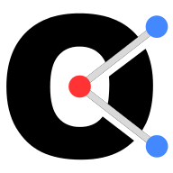
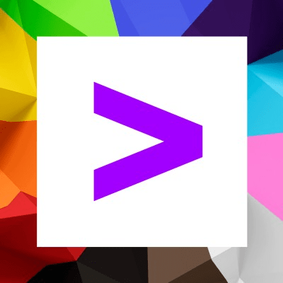

-
Dec 2023 - Present
Data Science Research Associate
 Observatory on Social Media, Indiana University
Bloomington, IN
• Developed a ChatGPT (GPT-4 mini) assistant using the OpenAI API for the network visualization tool Helios-Web, enabling interactivity for network manipulation and data exploration.
• Utilized MapReduce functions with filter and transform functionality and arrow functions in JavaScript to perform efficient network data manipulation.
• Performed extensive prompt testing and zero-shot, one-shot and few-shot learning, enhancing model response accuracy by 60%.
-
May 2024 - Aug 2024
Machine Learning Research Intern
Indiana University Bloomington
Bloomington, IN
• Co-authored a research paper on a cutting-edge LSTM Quantum GAN architecture for high-resolution image generation, achieving a 5x reduction in qubit counts and a 12x reduction in two-qubit gates.
• Analyzed over 30 research papers on Quantum GAN and Patch GAN frameworks, enabling generator convergence within 200 epochs with just 5 qubits through meticulous hyperparameter tuning.
• Evaluated compute and memory performance across various transformer architectures and network topologies using DNN accelerators and open-source tools like SCALE-SIM and AstraSim.
• Developed shell scripts to automate the analysis of parallel distributed training across multiple transformer architectures, utilizing systolic arrays in a scale-out configuration with up to 128 TPUs.
-
June 2021 - July 2022
Associate Software Engineer
 Accenture
Pune, India
Client: Fortune 500 Energy Company
• Developed ETL pipeline to process and store real-time usage and monitoring data from smart electric meters, using AWS Kinesis and Lambda for real-time streaming and Amazon S3 for storage. Managed data from over 400,000 residential and commercial customers for a utilities company.
• Standardized and cleaned data from three different sources—AMI meter readings, customer databases, and billing systems—ensuring data integrity and consistency with Python. Implemented data quality checks using SQL queries to maintain high standards of accuracy.
• Enhanced data querying efficiency by indexing and partitioning data based on time (daily and monthly). Used AWS Glue to transform CSV files to Parquet format, resulting in a 3500 ms improvement in query performance through advanced data compression techniques.
• Designed and developed a dashboard to visualize and analyze energy consumption patterns and grid performance, providing actionable insights for business stakeholders.
Awards: Pinnacle Award for Outstanding Performance -
June 2020 - July 2020
Data Engineer Intern
Amar Ujala Web Services Pvt. Ltd.
Pune, India
• Designed an ETL pipeline to ingest data from MongoDB and aggregate it using MapReduce across the four subsidiary e-newspaper websites of AmarUjala, a top 4 newspaper company in North India.
• Analyzed user reading patterns and content preferences, resulting in an 8% increase in active users through targeted content curation.
• Partitioned data into daily, weekly, and monthly user aggregates for optimized storage and analysis. Implemented sargable queries as part of the optimization process to enhance data retrieval efficiency.
Projects
-
 LoRA Fine-Tuning from Scratch using PyTorch
LoRA Fine-Tuning from Scratch using PyTorch- Fine-tuned the DistilBERT model on the Emotions dataset using LoRA, achieving 93% accuracy.
- Applied rank-decomposition with a rank of 1, reducing the model parameter size by 99% and significantly accelerating the training process.
- Tools & Skills: PyTorch, Transformers, LoRA, LLM
-
 RAG Pipeline from Scratch for Question-Answering
RAG Pipeline from Scratch for Question-Answering- Developed a robust RAG pipeline for a custom Data Science Interview Questions dataset using Google's Flan T5 model to enhance question-answering capabilities.
- Optimized document retrieval by implementing ElasticSearch and SentenceTransformers models, resulting in a 30% improvement in indexing speed through effective data chunking.
- Boosted retrieval accuracy by 10% through the integration of Document Re-ranking and Hybrid Search techniques, refining the relevance and precision of search results.
- Tools & Skills: PyTorch, ElasticSearch, Docker, Transformers
-
 Alzheimer's Early Prediction using Deep-CNN
Alzheimer's Early Prediction using Deep-CNN- Built an end-to-end data-centric image classification DNN model to predict Alzheimer’s disease, achieving an F1 score of 83%.
- Applied data augmentation techniques to address dataset skewness, resulting in an 11% increase in accuracy.
- Leveraged Amazon SageMaker for parallel distributed training jobs across multiple CPU instances, reducing training time by approximately 70%.
- Tools & Skills: PyTorch, DNN, SageMaker
-
Portfolio Trading Agent using PPO with Attention
- Developed a stock trading agent using Proximity Policy Optimization (PPO) and self-attention mechanisms, optimizing performance across 17 trading indicators.
- Designed and implemented a custom Feature Extractor within the Stable Baselines library, utilizing self-attention for context-aware embeddings from a sliding window of 30 past observations to incorporate historical context into current decision-making.
- Tools & Skills: PyTorch, Transformers, Reinforcement Learning
-
 Multi-Task Learning using Transformers
Multi-Task Learning using Transformers- Applied multi-task learning with Transformers using the DistilBERT Model on the Amazon Clothing Reviews dataset.
- Trained 2 classification and regression heads to simulteneously predict the rating and reviewer age using a combined weighted loss.
- Implemented hard-parameter sharing architecture to achieve 93% classification accuracy and a Mean Absolute Percentage Error (MAPE) of 26% for the regression task.
- Tools & Skills: Transformers, PyTorch
-
IPL Data Analysis using PySpark
- Analyzed historical IPL cricket data using PySpark to extract actionable insights on player and team performance.
- Employed advanced Spark SQL functions such as window functions and pivot tables for effective feature engineering and data transformation.
- Utilized Python libraries like NumPy, Pandas, and Matplotlib for comprehensive data visualization and analysis.
- Tools & Skills: PySpark, Databricks, SQL, Python
-
 Quantum GAN MNIST Handwritten Digit Image Generation
Quantum GAN MNIST Handwritten Digit Image Generation- Utilized Quantum GAN to generate MNIST images with as few as 5 qubits, achieving generator convergence within 200 epochs.
- Implemented a Patch-based GAN architecture and a distributed training framework to enhance image generation capabilities.
- Experimented with various qubit gates and configurations, including qubit and sub-generator counts, to improve the Fréchet Inception Distance (FID) score by 10%.
- Tools & Skills: Quantum GAN, PyTorch, Qiskit